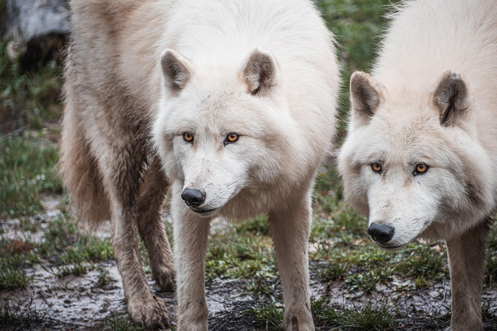
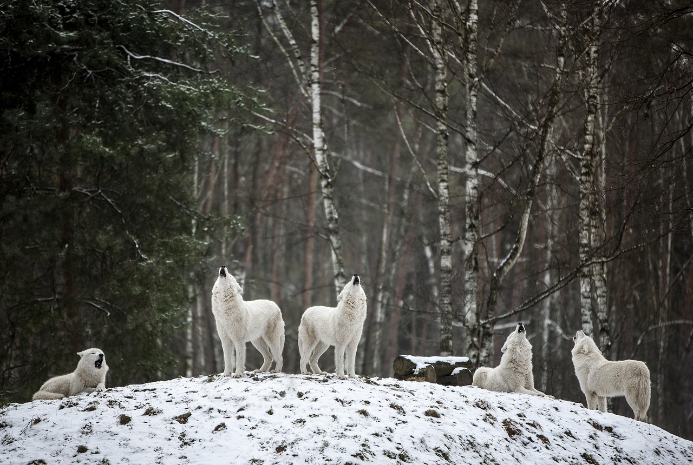
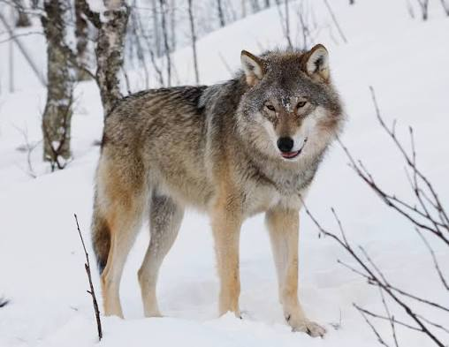
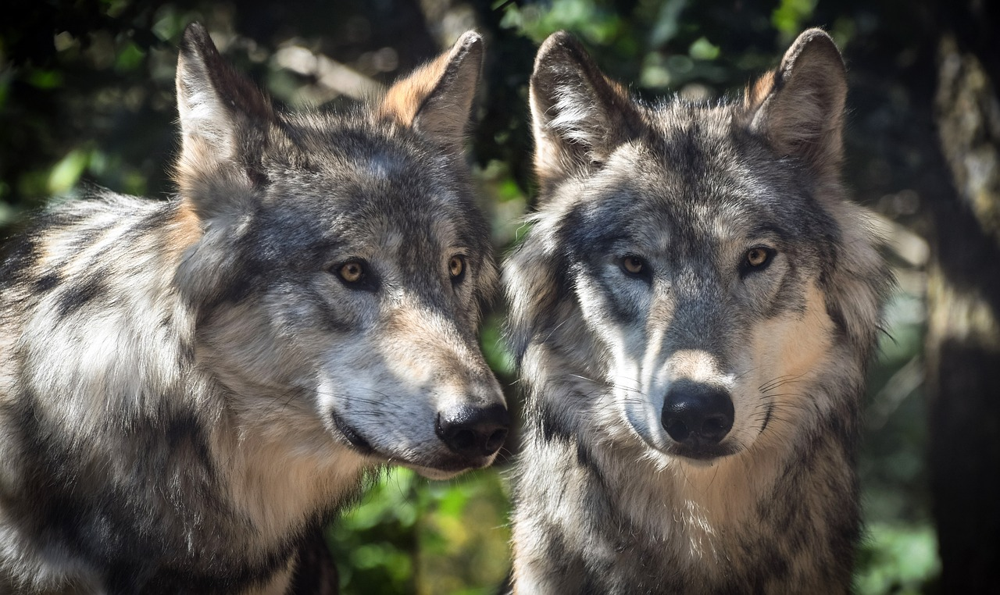
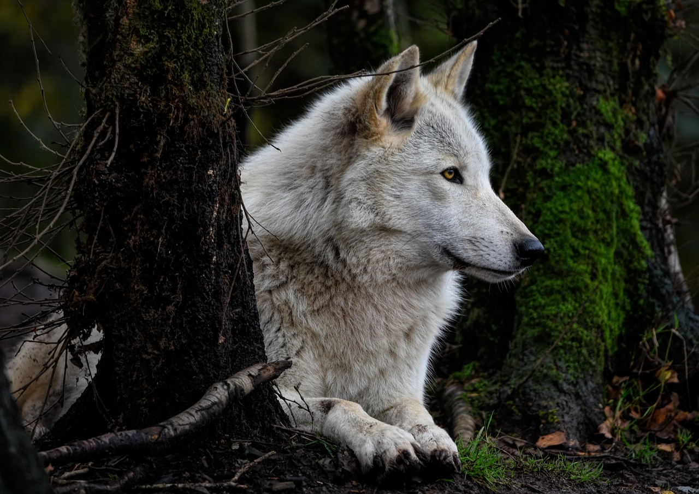

Podívejte se na krásu a každodenní život vlků.
SEZNAMTE SE

VLK OBECNÝ • CANIS LUPUS
Luna je elegantní a inteligentní vlčice, která vyniká svou ostražitostí a zvědavou povahou. Má silné sociální vazby a ráda objevuje své okolí. Její přirozená divokost a krása z ní dělají výjimečnou členku naší smečky.
✓ Veterinární prohlídka - v pořádku
✓ Kontrola chrupu - v pořádku
✓ Kontrola pohybového aparátu - v pořádku
Ukázkové výsledky • 12. 4. 2026• Dobrá fyzická kondice
• Silné sociální vazby
• Přirozené chování ve smečce
Ostatni vlci



